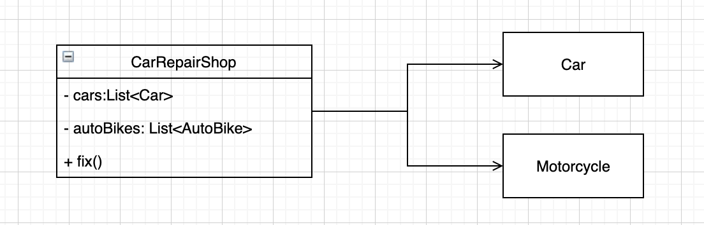
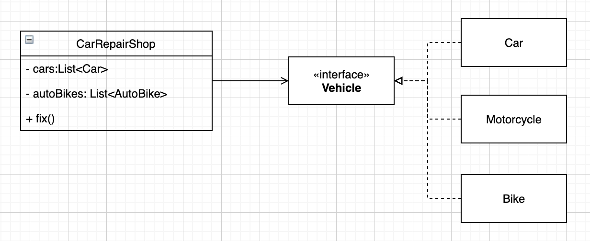

“DI와 DIP”
사실 프로그래밍을 공부하는 사람들 중에 DI, DIP 개념을 못들어본 사람은 거의 없을 것이다. 설사 개념을 모르고 있다고 하더라도 우리가 무심코 사용한 코드 사이를 자세히 훑어본다면 숨겨진 개념들을 발견할 수 있을지도 모른다. 그만큼 너무나도 익숙한, 익숙해서 놓치기 쉬운 개념들을 정리해보자.
DI
DI, Dependency Injection, 직역하자면 의존성 주입이 된다. 여기서 의존성이라는 말이 나오는데, 의존성이 무엇인데 주입을 할까?
의존성이란
프로그래밍에서 의존성(Dependency)을 쉽게 설명하자면 사람사이의 의존성과 같다. A라는 사람이 자동차가 고장나서 수리할 곳을 찾다가 집근처 유명 자동차 수리점을 찾게되었다. A는 해당 자동차 수리점에 자동차 수리를 부탁 결국 자동차는 말끔히 고쳐졌다. 여기서 자동차 수리점은 A가 수리를 맡긴 차에 의존하게 된다.
1 | class CarRepairShop { |
그렇다면 의존성 주입이란?
한마디로 의존성을 주입받겠다, 인수로 취하겠다는 것이다. 인수는 영어로 Argument로 함수로 전달되는 실제 값이다. 위 코드에서는 내부변수로 사용하고 있는 car 가 인수가 된다. 그렇다면 A는 여전히 해당 자동차 수리점에 자동차 수리를 부탁하고 싶은데 의존관계를 어떻게 맺는 것이 좋은 방법일까? 이것에 대해서 이미 다수의 좋은 방법들이 소개되어 있다.
생성자 주입(Constructor Injection)
1 | class CarRepairShop{ |
대표적인 의존성 주입 방법으로 알려져 있다. 사실 이전에 생성자 주입보다는 필드 주입을 더 사용하는 편이였는데 인텔리제이에서 필드 주입을 위해 @Autowired를 사용할 때면 추천하지 않는 방법이라며 친절하게 경고를 띄워주기도 했다. 왜 인텔리제이가 경고를 했는지는 추후 별도 포스트를 통해 다뤄보도록 하겠다.
여기서 중요한 것은 우리는 생성자를 통해 A가 수리를 맡긴 Car 를 주입받을 수 있다는 것이다.
왜? 그냥 생성해서 쓰면 안돼?
그렇다면 한가지 의문이 들수 있다. 왜 굳이 우리는 의존성을 주입받아야 할까? 왜 Car를 직접 생성해서 사용하지 않고 생성자나 필드, 다른 방법들을 통해서 주입받아야만 하는 것일까.
그 대답을 위해 다시 CarRepairShop에 돌아가보자. 자동차를 너무나 사랑하는 A는 사실 대기업 임원의 자식으로 다수의 차들을 보유하고 있다. 하지만 슬프게도 그의 애정과 반비례하는 처참한 운전실력떄문에 차고의 차 중에 성한 차를 찾기 어려울 정도가 되었다. 결국 A는 그의 차고안의 차들을 모두 수리 맡기기로 결정했다.
1 | class CarRepairShop { |
A의 차들을 모두 수리했고 A는 만족하며 아끼지 않고돈을 지불했다. 하지만 자동차 수리점이 여기서 잊고있었던 점은 A는 돈이 많다는 것이고 최신형 차들은 A의 차고에 하나 둘씩 쌓여갔다.
위 코드에서 A가 다른차의 수리 맡기려면 어떻게 해야할까? 있는 차를 팔고 다른 차를 사면? 그떄마다 코드는 끊임없이 수정되어야 할 것이다. A의 변덕스러운 취향에 맞춰.
1 | class CarRepairShop { |
A가 구입한 Audi와 Porsche가 추가되었다. 여기서 우리는 무언가 잘못됬다는 느낌을 받을 것이다. A가 맡긴 차들이 변동될때마다 CarRepairShop 클래스의 코드를 변경해야 하나? 답은 DI에 있다.
1 | class CarRepairShop { |
위는 생성자 주입을 통한 의존성 주입 코드로 변경한 것이다. CarRepairShop은 더이상 A가 무슨 차를 살지 일일이 신경쓰지 않아도 된다. 그저 A가 차고에 맡긴 차들을 주입받아 수리하면 그만이다.
결국
의존성 주입이란 추상화를 해치지 않는 선에서 의존성을 어떻게 인수로 넘겨줄까 고민하는 방법 이다.
DIP
Dependency Inversion Principle, 직역하면 의존성 역전 원리이다. 우리는 앞서 의존성 주입을 살펴보았다. 그렇다면 의존성 역전은 어떤 것일까? 생김새도 닮은 DI와 DIP는 의미하는 것도 비슷할까?
답은?
DI는 DIP를 구현하는 방법중 하나라고 볼 수 있다. 하지만 DI를 사용하면서도 DIP와는 상관없는 경우도 있다. 일단 DIP를 먼저 살펴보자.
DIP 란
DIP를 검색하면 나오는 대표적인 정의는 아래와 같다.
상위 모듈은 하위 모듈에 의존해서는 안된다. 상위 모듈과 하위 모듈 모두 추상화에 의존해야 한다.
추상화는 세부 사항에 의존해서는 안된다. 세부사항이 추상화에 의존해야 한다.
이해하기 쉽게 A를 다시 불러보자.
A는 새로운 취미를 가졌다. 우연히 접한 오토바이에 매력을 느껴 오토바이 광이 된 A는 초보운전에 걸맞게 사고를 몰고다녔다. 결국 그의 차고엔 나날이 고장난 오토바이들이 쌓여갔다. 결국 A는 다시 자동차 수리점을 찾았다.
1 | class CarRepairShop { |
자동차 수리점은 기존에 오토바이 수리기능이 없었기 때문에 허겁지겁 내부변수를 추가하고, 생성자를 통해 인수로 오토바이들을 주입받았다. 그리고 fix() 메서드에 기존 자동차와 같이 수리하는 로직을 더했다. A는 흡족해하면서 오토바이를 찾아갔다. 그런데 여기서 잊기쉬운 점은 A는 돈이 매우많다는 사실이다. A는 이번에 자전거를 구입했다. 결과는 안봐도 뻔할 것이다. 최대 단골인 A를 놓치지 않기 위해 자동차 수리점은 그때마다 수리로직을 추가했다. 코드는 점점 길어졌고 새로운 종류가 하나씩 들어올때마다 수리점은 발칵 뒤짚혔다.
이 모든 문제는 DIP를 위반하는데서 온다. CarRepairShop의 의존성을 살펴보자.

CarRepairShop이 Car와 Motorcycle 의존하고 있다. 상위모듈이 하위모듈에 의존하고 있다. 이렇기 때문에 하위모듈이 추가되거나 변동될때마다 상위모듈 또한 함께 변동되어지게 된다. 의존성이 아래로 향하고 있다.
그렇다면 의존성을 어떻게 역전해야 할까?
방법은 이미 위에 나와있다. DIP를 준수해 추상화에 의존하면 된다.
자동차 수리점으로 다시 돌아가보자. A의 잦은 변덕에 질릴대로 질린 자동차 수리점은 결국 묘수를 생각해 냈다. 수리 가능한 이동 수단을 Vehicle 라는 공통적인 인터페이스를 만든 후 A가 수리를 맡긴 이동수단들을 모두 Vehicle를 구현하도록 만든 것이다. 이 한 문장으로 인해 자동차 수리점은 평화를 되찾게 되었다. 코드로 살펴보자.
1 | interface Vehicle{ |
CarRepairShop은 A가 구입한 이동수단 종류에 상관 없이 의존성을 주입받아 고쳐주는 일만 진행하면 된다.

CarRepairShop과 하위모듈들은 모두 추상화인 Vehicle에 의존하고 있다. DIP를 만족시키는 설계이다.
DI는 DIP와 어떤 관계일까?
이부분에 있어서는 답을 내리는 대신 글을 쓰는데 도움을 얻은 블로그 주소를 추가 하도록 하겠다.
출처
https://medium.com/@jang.wangsu/di-dependency-injection-%EC%9D%B4%EB%9E%80-1b12fdefec4f
http://jwchung.github.io/DI는-IoC를-사용하지-않아도-된다
https://justhackem.wordpress.com/2016/05/13/dependency-inversion-terms/